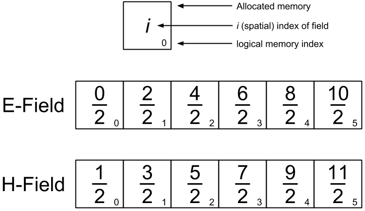
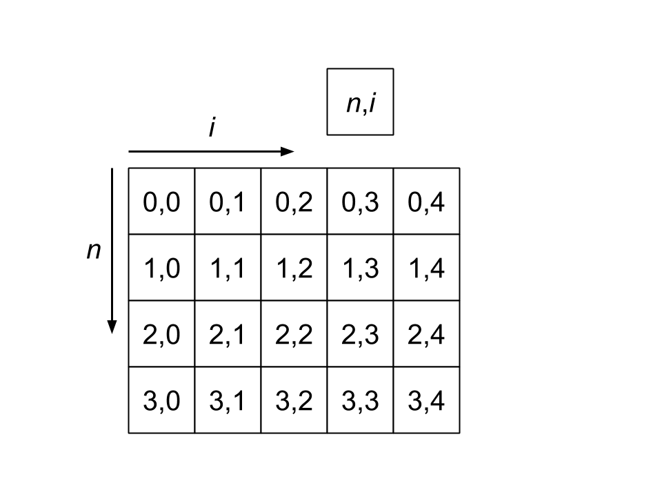

sim¶
The simulation class treats field indicies as follows
{kind=link}
Both the electric and magnetic fields are initialized to the same length, meaning that they have a slight offset in starting and ending locations in the simulation. The E-field at each time is stored in a Numpy array with the following structure
{kind=link}
The H-field and current arrays have corresponding structures.
- Discuss the choice of \(\frac{\Delta t}{\Delta z}\approx c\)
- Discuss how to create a current object
-
class
sim.Sim(i0, i1, di, n0, n1, dn, cfield, boundary, vacuum_permittivity, infinity_permittivity, vacuum_permeability, susceptibility, initial_susceptibility)[source]¶ Represents a single simulation. Field is initialized to all zeros.
Parameters: - i0 – The spatial value at which the field starts
- i1 – The spatial value at which the field ends
- di – The spatial step size
- n0 – The temporal value at which the field starts
- n1 – The temporal value at which the field ends
- dn – The temporal step size
- boundary – The boundary type of the field, either ‘zero’, for fields bounded by zeros, ‘periodic’ for periodic boundary conditions, or ‘mirror’ for boundaries that reflect inner field values.
- vacuum_permittivity – \(\epsilon_0\)
- infinity_permittivity – \(\epsilon_\infty\)
- vacuum_permeability – \(\mu_0\)
- susceptibility – A susceptibility object
- initial_susceptibility – The initial susceptability. Eventually will be included in the susceptibility object.
- current_field – A field object that represents the current
-
static
calc_dims(n0, n1, dn, i0, i1, di)[source]¶ Calculates the dimensions of the simulation in cells.
Parameters: - i0 – The spatial value at which the field starts
- i1 – The spatial value at which the field ends
- di – The spatial step size
- n0 – The temporal value at which the field starts
- n1 – The temporal value at which the field ends
- dn – The temporal step size
Returns: A tuple (nlen, ilen) of the temporal and spatial dimensions
-
export()[source]¶ Exports all field values along with the spatial and temporal bounds of each field cell
Returns: A tuple (n, i, e, h, c)wherenis a Numpy array containing the spatial bounds of each field cell,iis a Numpy array containing the temporal bounds of each field cell,eis a Numpy array containing the E-field (axis=0 is time and axis=1 is space),his a Numpy array containing the H-field (axis=0 is time and axis=1 is space), andcis a Numpy array containing the current field (axis=0 is time and axis=1 is space)
-
get_bound_res()[source]¶ Returns the boundaries and resolution of the simulation
Returns: A tuple (n0, n1, dn, i0, i1, di)